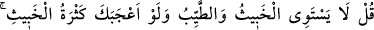
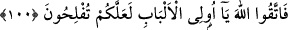

PİS İLE TEMİZ BİR OLMAZ
100. De ki: Pis ile temiz bir olmaz. Pis ve kötünün çokluğu tuhafına gitse (yahut
hoşuna gitse) de (bu böyledir). Öyleyse ey akıl sahipleri! Allah’tan korkun ki
kurtuluşa eresiniz.
“De ki: Pis ile temiz bir olmaz.” Bu âyet Yemâme hacıları hakkında nâzil olmuştur.
Müslümanlar onlara, aralarında bulunan Hatîm isimli şahıs yüzünden baskın yapmaya
niyetlenmişlerdi. Çünkü bu Hatîm, bir önceki yıl Medîne’ye gelmiş ve şehir dışında
otlayan hayvanları önüne katıp götürmüştü. Bu olaydan bir yıl sonra, yani kaza umresi
yılında hac yapmak üzere Mekke’ye doğru yola çıkmıştı.
Hayvanları çalınan sürü sahipleri bu durumdan haberdar olunca hemen Hz.
Peygamber’e (s.a.) giderek şöyle söylediler: “Bu Hatîm, Yemâmelilerle beraber hac
yapmak üzere yola çıkmış. Müsâade et onun hakkından gelelim.” Hz. Peygamber (s.a.)
de: “Fakat o, kurbanlıkların boyunlarına gerdanlıklarını asmış!” diye cevap verdi ve
kurbanlıkların boyunlarına gerdanlık takan herkese tanınan emniyet sebebiyle onlara izin
vermedi. Hemen ardından da müşrik bile olsa, hac için gelenlere saldırmayı yasaklayan
ilgili âyet Hz. Peygamber’i tasdik etmek üzere nâzil olmuştur. Nitekim bu kıssa, sûrenin
baş tarafındaki “Ey îman edenler, Allah’ın işaretlerine... saygısızlık etmeyin.” (el-
Mâide, 5/2) âyetinin tefsirinde geçmiştir.
Bu âyetin hükmü, Tevbe sûresi inene kadar geçerli olmuş, bu sûrenin inmesiyle de
nesholunmuştur. Çünkü bu sûrede “Müşrikler ancak pisliktirler. Artık bu yıllarından
sonra Mescid-i Harâm’a yaklaşmasınlar.” (et-Tevbe, 28) âyet ile “Müşrikleri
öldürün!” (et-Tevbe, 5) âyet yer almaktadır.
Böylece Cahiliyye dönemindeki hac kurbanı, onların gerdanlıkları, haram ay, ihram ve
müslüman olmadan müşriklerin bu sayılanları yapınca emniyette olmaları ile ilgili
hüküm nesh olunmuştur.
Her ne kadar bu âyetin sebeb-i nüzulü husûsî ise de, Allah katında kötü ve iyinin eşit
olamayacağı konusunda hükmü umûmidir. Âyette iyiye teşvik, kötüden de sakındırma
söz konusudur.
“Pis ve temiz” ya da iyi ve kötü pek çok konuyla alakalıdır:
1- Bu konulardan birisi haram ve helal konusudur. Buğday tanesi ağırlığındaki bir
helâl, Allah katında dünyâlar dolusu haramdan daha tercihe şayan, makbul ve
sevimlidir. Çünkü haram pistir ve Allah tarafından reddedilmiştir. Helâl ise iyi, temiz
ve Allah tarafından kabul görmüştür. Bu nedenle ikisi hiçbir zaman birbirine denk